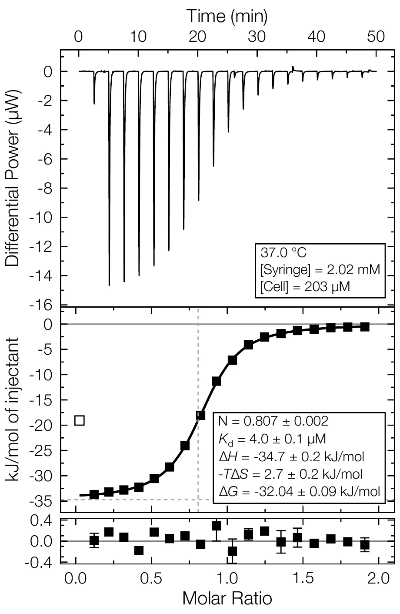
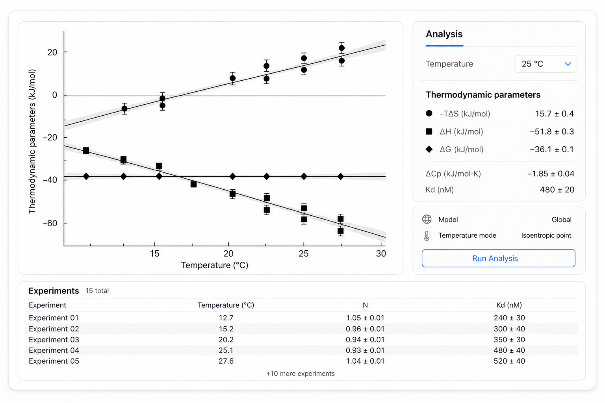

Open & inspect
Import data and review the experimental setup. Check instrument settings and injection details. Verify temperature and adjust concentrations.
Free, open-source ITC analysis
FT-ITC Analysis is a free, open-source desktop application for processing, fitting and presenting isothermal titration calorimetry data. It combines flexible raw-data processing with multiple fitting approaches, global analysis, uncertainty estimation and advanced thermodynamic interpretation.

Desktop first
Work with experimental data on your own computer, revisit any processing step and save complete analyses as portable FT-ITC projects.
Built for more than one fit
A visible workflow
FT-ITC Analysis brings data import, processing, fitting, advanced analysis and figure creation into one application. Start with raw thermograms, integrated heats or an existing FT-ITC project. Adjust the workflow to the experiment and adapt to the needs of your data.
Import data and review the experimental setup. Check instrument settings and injection details. Verify temperature and adjust concentrations.
Use flexible baseline controls, adjust peak integration and fit standard interaction models. Alternative processing and correction options can help make difficult datasets analysable.
Use multi-experiment analyses and make clear figures for your next publication. Embedded advanced analyses provide deeper insights into your data.

Global fitting
Fit multiple isotherms simultaneously while deciding which parameters should be shared and which remain experiment-specific. Lock down difficult situations and implement physical constraints such as ΔCp.
See the app capabilities →Web viewer
The online viewer opens FT-ITC project files for easy sharing and review, keeping experimental data, fits and analysis results together.
Checking availability… Open a project in the browser for easy sharing and review.
Open the web viewer ↗